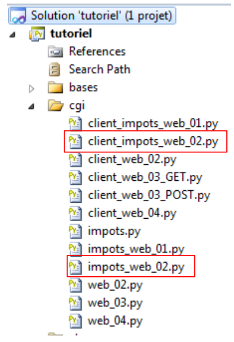
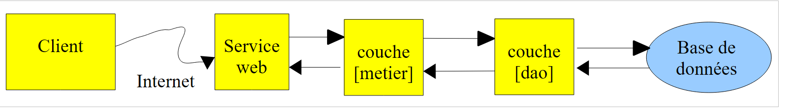

15. Exercise [IMPOTS] with XML
In this exercise, which has been studied many times before, the server returns the results to the client in the form of a XML stream:
- <response><error>msg</error></response> in case of an error;
- <response><tax>value</tax></response> if the tax could be calculated.
We use what we have just learned about analyzing a XML document.
 |
15.1. The Web Service
The web service is no different from the one discussed previously, except that the XML response sent to the client is slightly different. The architecture remains the same:
 |
#!D:\Programs\ActivePython\Python2.7.2\python.exe
# -*- coding=Utf-8 -*-
# import of Impots* class module
from impots import *
import cgi,cgitb,re
# allow debugging information to be displayed
cgitb.enable()
# ------------------------------------------------
# tax web service
# ------------------------------------------------
# the data required to calculate the tax has been placed in table mysqL TABLE
# belonging to the BASE database. The table has the following structure
# limits decimal(10,2), coeffR decimal(6,2), coeffN decimal(10,2)
# taxable person parameters (marital status, number of children, annual salary)
# are sent by the customer in the form params=marital status, number of children, annual salary
# results (marital status, number of children, annual salary, tax payable) are returned to the customer
# in the form <impot>value</impot>
# or as <error>msg</error>, if parameters are invalid
# the server returns unformatted text to the client
print "Content-Type: text/plain\n"
# start of answer
print "<reponse>"
# definition of constants
USER="root"
PWD=""
HOTE="localhost"
BASE="dbimpots"
TABLE="impots"
# instantiation layer [metier]
try:
metier=ImpotsMetier(ImpotsMySQL(HOTE,USER,PWD,BASE,TABLE))
except (IOError, ImpotsError) as infos:
print ("<erreur>Une erreur s'est produite : {0}</erreur>".format(infos))
sys.exit()
# retrieve the line sent by the client to the server
params=cgi.FieldStorage().getlist('params')
# if no parameters then error
if not params:
print "<erreur>Le parametre [params] est absent<erreur></reponse>"
sys.exit()
# we use the params parameter
#print "parameters received --> %s\n" %(params)
items=params[0].strip().lower().split(',')
# there must be only 3 fields
if len(items)!=3:
print "<erreur>[%s] : nombre de parametres invalide</erreur></reponse>" % (params[0])
sys.exit()
# first parameter (marital status) must be yes/no
marie=items[0].strip()
if marie!="oui" and marie != "non":
print "<erreur>[%s] : 1er parametre invalide</erreur></reponse>\n"% (params[0])
sys.exit()
# the second parameter (number of children) must be an integer
match=re.match(r"^\s*(\d+)\s*$",items[1])
if not match:
print "<erreur>[%s] : 2ieme parametre invalide</erreur></reponse>\n"% (params[0])
sys.exit()
enfants=int(match.groups()[0])
# the third parameter (salary) must be an integer
match=re.match(r"^\s*(\d+)\s*$",items[2])
if not match:
print "<erreur>[%s] : 2ieme parametre invalide</erreur></reponse>\n"% (params[0])
sys.exit()
salaire=int(match.groups()[0])
# tax calculation
impot=metier.calculer(marie,enfants,salaire)
# return the result
print "<impot>%s</impot></reponse>\n" % (impot)
# end
Notes:
This web service differs from the previous one only in the nature of its response:
<response><error>msg</error></response> in case of an error instead of <error>msg</error>
<response><tax>value</tax></response> if the tax could be calculated instead of <tax>value</tax>
15.2. The client application
Our client must parse the XML response sent by the web service. We apply what was covered in the analysis of a XML document.
# -*- coding=utf-8 -*-
import httplib,urllib,re
import xml.sax, xml.sax.handler
# management class XML
class XmlHandler(xml.sax.handler.ContentHandler):
# function called when a start tag is encountered
def startElement(self,name,attributs):
# note the current element
global elementcourant
elementcourant=name.strip().lower()
# the function called when an end tag is encountered
def endElement(self,name):
# we do nothing
pass
# the data management function
def characters(self,data):
# data
global elementcourant,elements
# data are retrieved
match=re.match(r"^\s*(.+?)\s*$",data)
if match:
elements[elementcourant]=match.groups()[0].lower()
def getResultatsXml(reponse):
# we analyze the XML response
xml.sax.parseString(reponse,XmlHandler())
# we return the results
if elements.has_key('erreur'):
return (elements['erreur'],"")
else:
return ("",elements['impot'])
# ------------------------------------------------------------ main
# constants
HOST="localhost"
URL="/cgi-bin/impots_web_02b.py"
data=("oui,2,200000","non,2,200000","oui,3,200000","non,3,200000","x,y,z,t","x,2,200000", "oui,x,200000","oui,2,x");
# global variables
elementcourant=""
elements={}
# connection
connexion=httplib.HTTPConnection(HOST)
# follow-up
#connexion.set_debuglevel(1)
# loop over the data to be sent to the server
for params in data:
# parameters must be encoded before being sent to the server
parametres = urllib.urlencode({'params': params})
# send request
connexion.request("POST",URL,parametres)
# response processing (stream XML)
reponse=connexion.getresponse().read()
# use of the xml file
(erreur,impot)=getResultatsXml(reponse)
if not erreur:
print "impot[%s]=%s" % (params,impot)
else:
print "erreur[%s]=%s" % (params,erreur)
Notes:
- The XML web service flow is used by the getResultatsXml function (line 60);
- line 29: the getResultatsXml function;
- Line 31: The web service response XML is parsed by an instance of the class XmlHandler defined on line 6;
- Line 6: The XmlHandler class implements the three methods startElement, endElement, and characters. Using these three methods, a dictionary is created. The keys are the names of the <error> and <import> tags, and the values are the data associated with these two tags;
- lines 33–36: the function getResultatsXml returns a tuple with two elements:
- (error,"") if the analysis of the XML stream revealed the presence of the <error> tag. error then represents the content of this tag;
- ("", imp) if the analysis of the XML stream revealed the presence of the <imp> tag. imp then represents the content of this tag.
- Line 60: The result of the getResultatsXml function is retrieved and then processed in lines 61–64.